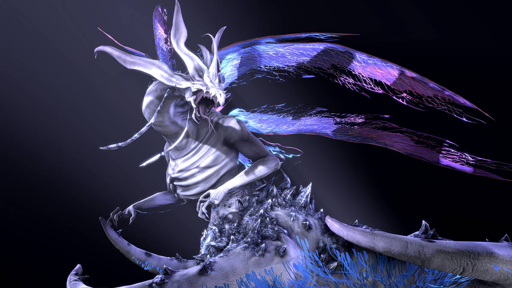

Hechizos
Se dice que los hechizos tienen su origen en Seath el Descamado, el "abuelo de la brujería". La antigua tierra de Oolacile posee sus propios hechizos, los cuales son una "aproximación" a los hechizos modernos, y se caracterizan por aumentar el arma o cuerpo, en lugar de causar daño. Manus, Padre del Abismo es la fuente de al menos un hechizo del Abismo. Se dice que los hechizos del Abismo fueron descubiertos por un hechicero de Oolacile al borde de la locura, posiblemente Gilleah el Brujo. Estos hechizos difieren de los demás hechizos normales, los cuales derivan de las almas, ya que los hechizos oscuros extraen su poder a través de la humanidad, además de causar daño mágico y físico debido a su naturaleza "pesada". Sombrero Grande Logan de la Escuela de Dragones de Vinheim jugó un papel importante en el desarrollo de numerosos hechizos. Durante su encaprichamiento con Seath el Descamado en Los Archivos del duque, Logan desarrolló nuevos hechizos y mejoró los que ya existían.
Imagen de Seath el Descamado.